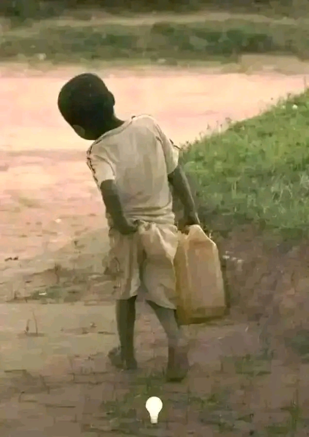
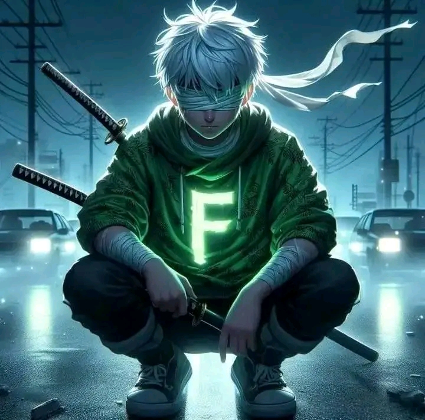
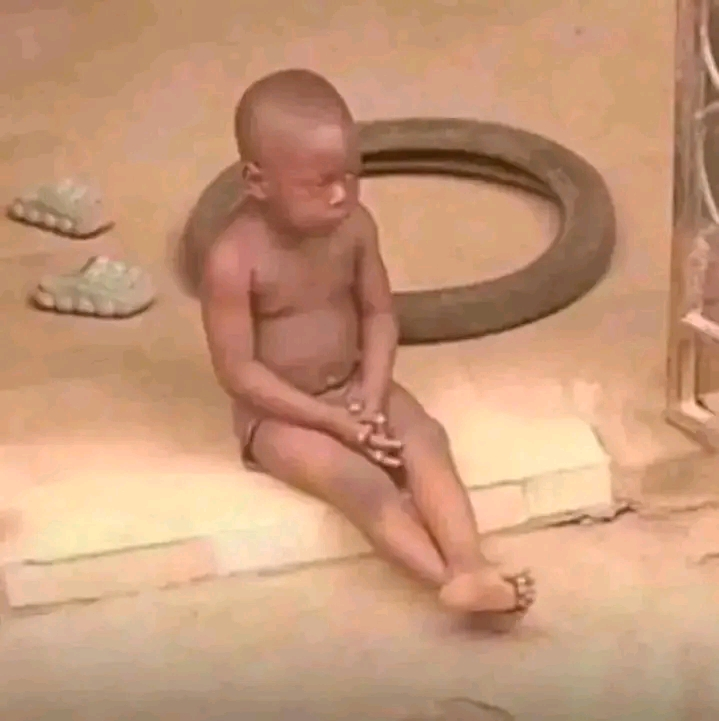
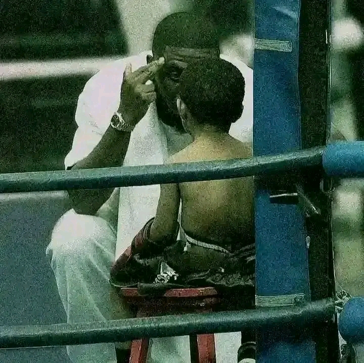
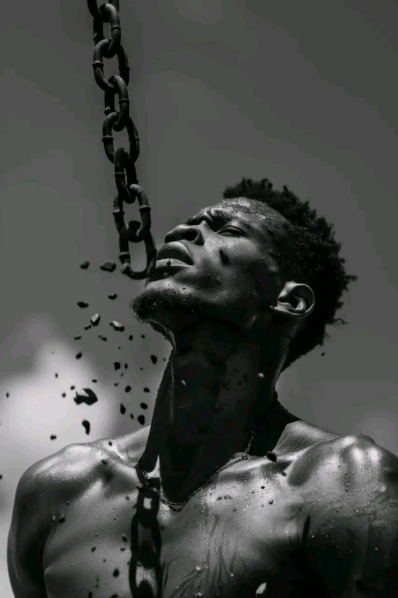
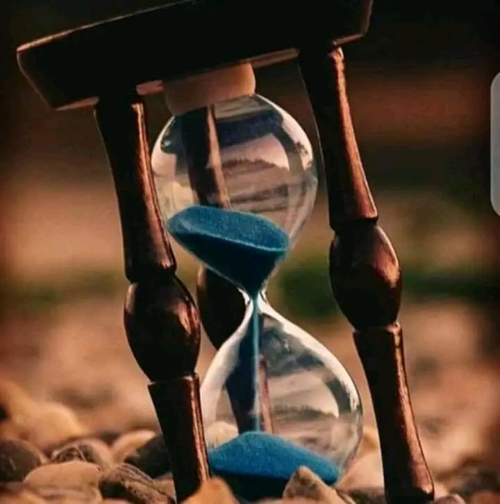
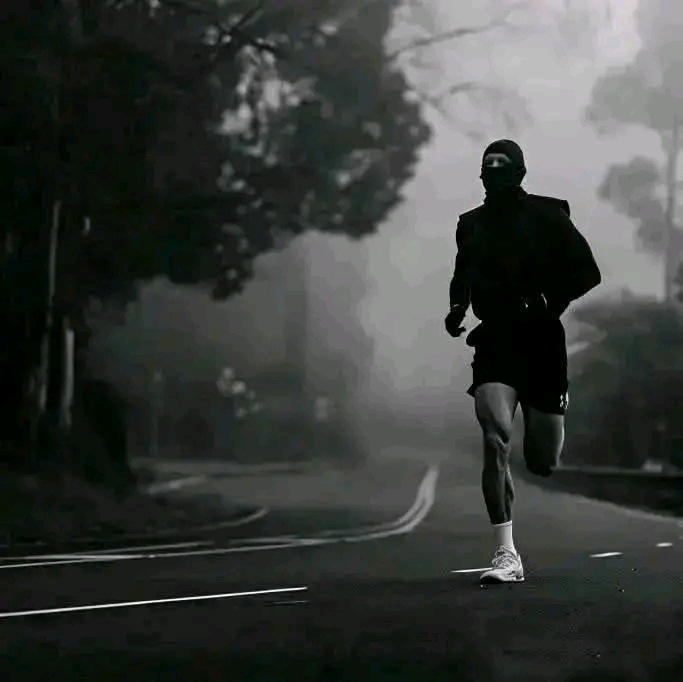
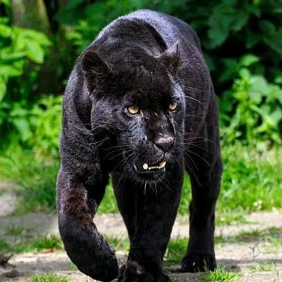
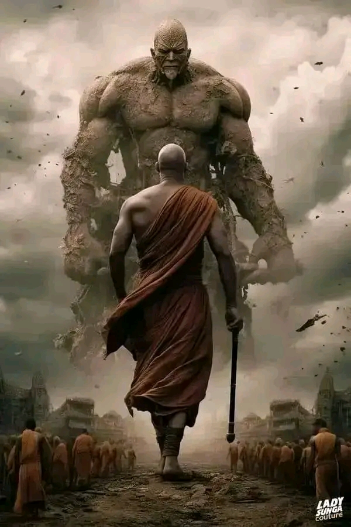

01 ↗ Voir l'histoireLe Commencement
Il pense que c'est inutile de donner son nom, cette vie ne lui a pas laissé le choix, elle lui a arraché tout ce qui est cher dès sa naissance.
Lire l'histoire


01 ↗ Voir l'histoireIl pense que c'est inutile de donner son nom, cette vie ne lui a pas laissé le choix, elle lui a arraché tout ce qui est cher dès sa naissance.

02 ↗ Voir l'histoireIl se pose fréquemment des questions essentielles sur ce monde, cette vie, cet univers, en essayant de le comprendre à sa manière.

03 ↗ Voir l'histoireSolitaire, introverti et timide, son seul mentor reste la vie, ses vécus, ses expériences, car il a grandi très vite.
Il analyse les causes profondes de l'injustice, les systèmes qui maintiennent les gens au bas de l'échelle.

05 ↗ Voir l'histoireIl a choisi la mission plutôt que le confort. Cet engagement fixe sa direction. Il n'y a plus de retour en arrière.

06 ↗ Voir l'histoireIl transforme sa volonté en habitudes : réveil matinal, travail régulier, objectif clair. La discipline devient sa force visible.

07 ↗ Voir l'histoireDes actions simples répétées tous les jours. La constance transforme son effort en progrès durable.
Son premier projet affronte la réalité : problèmes financiers, besoins urgents, contraintes techniques.

09 ↗ Voir l'histoireIl se lance dans l'internet, les agents IA, les drones intelligents, les satellites et la conquête de l'espace.

10 ↗ Voir l'histoireIl rêve d'un monde meilleur, être un exemple, créer des fondations, être un modèle pour toute une génération.